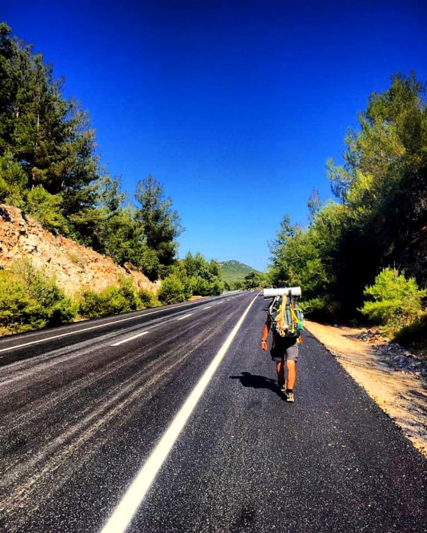

Şehir hayatından sıkılmış; yoğun trafik stresi, korna sesleri, yaya trafiği, kendisine hitap etmeyen kurallar, egzoz dumanı, göze hoş gelmeyen yapılar… iş yerinde huzurlu olmayan; her gün ayni rutini izleyerek işe gidiş saatleri, dolmuş çilesi, mesleki stresler, sürekli gülümsemek zorunda olduğun mesai arkadaşları, ast-üst ilişkileri gibi bir çok unsur, her şeyi bir kenara bırakarak yola düşme fikrini getiriyor. Bezende sadece gezip görüp öğrenmek, anılar ve hikayeler biriktirmek, yeni insanlar tanıma fikri cazip geliyor. Bizlerin nedenleri aynı gibi görülse de aslında bir çoğumuzun hikayesi farklı olabiliyor.

Gezgin olmak; istediğin yere, istediğin zamanda, süre sıkıntısı olmadan seyahat edebilmektir. Bir sürü hikâye ve anı biriktirmektir. Şehir ve iş stresinden uzak durmaktır. Gülümsemek, mutlu olmak, farklı heyecanlar tatmaktır. Maceraya atılmak, kısaca özgür olmaktır!
İnsanların bizlere bakış açısı da; değişkenlik gösterebiliyor. Kimisi seçimlerimiz yada cesaretimizden dolayı taktir ederken, kimisi de bunların ‘boş işler olduğunu, meslek sahibi olmamız gerektiğini, aile kurmamızın önemli olduğunu, kısaca serserilikten ibaret olduğunu’ düşünürler. Ben aksine bunu tamamen “sigortalı bir iş karşılığında yaşama sevincini satmamak” diyorum.